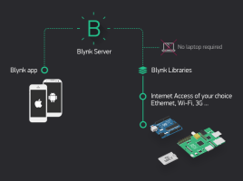
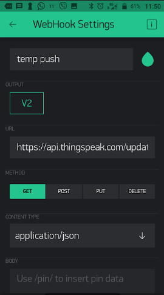

IoT Mobile Apps using Blynk
Remote Hardware Control via Mobile App.
Blynk was designed for the Internet of Things. It can control hardware remotely, it can display sensor data, it can store and visualise data.

In this lab you will:
- Use the Blynk app to control a Raspberry Pi
- Access your Phone sensors (light and GPS)
- Send data to 3rd party service (Thingspeak)
- Send your Phone location to Wia.
Install the Blynk App
You will need the Blynk app on an Android or IoS device such as a Smart Phone or Tablet. If you don't have a device available to do this, you can emulate Android on your desktop.
Install the Blynk App for your Smartphone (or Tablet) from here.
Use the App to do the following:
- Create a new account in Blynk App.
- Create a New Project with the following details:
- Name: Blynk-lab1
- Choose
Raspberry Pi 3as the board and the type of network connection you use with the RPi (either Wifi or Ethernet).
- After the project is created, You will see your empty app. We will add controls to it later. In the mean time, retrieve your project Auth Token in your email (check your junk folder if you can't find it).
Install Blynk Library on the Raspberry Pi
We will use Node Blynk library to control the RPi.
- Check if Node is already on the pi. If so,you are adviced to remove it and reinstall as follows:
(BTW: If node is already installed and you don't want to remove it, you can try to proceed to the next step and see if it works...)
sudo apt-get purge node nodejs node.js -y
sudo apt-get autoremove- Update package repository and install node
curl -sL "https://deb.nodesource.com/setup_6.x" | sudo -E bash -
sudo apt-get install build-essential nodejs -y
sudo apt-get install npmCreate your Blynk App
- Make a new directory for your Blynk project
mkdir blynk-lab- In that directory, initialise a new Node project:
npm initYou will be asked a few questions. Fill them in as you see fit - if you are unsure of any lust hit enter to use the default value.
- Install the Blynk dependencies
sudo npm install blynk-library --save
sudo npm install onoff ---save- In the
blynk-labdirectory, create a new file calledindex.jswith the following content:
var Blynk = require("blynk-library");
var AUTH = 'YOUR-AUTH-TOKEN';
var blynk = new Blynk.Blynk(AUTH);
var v1 = new blynk.VirtualPin(1);
v1.on('write', function(param) {
console.log('V1:', param[0]);
});The above script creates a Virtual Pin on your Raspberry Pi. You can use this to interface, display and send data with your Blynk app on your phone.
- Run the script by entering
node index.jsat the command line. You should see the following output:

Leave the app running on the RPi for the following section.
Send commands to the RPi From your phone app
So now lets send commands from your phone to the Raspberry Pi. Open Blynk-lab1 project on your mobile device and do the following
- Click on the
+icon in the menu to open theWidget box
- Select the
Buttonand it should appear on your project
- Double tap the button and apply the following settings
- name it
Light - In the Output section, select
PINand change it toVirtual V1 - Chane the Mode to
Switch
- name it
Now hit the back arrow to return to the Project.
Click the
RunButton to start the app on the phone.- Click on the
Lightbutton a few times, it will toggle between on and off. - Examine the output on the RPi console, you should see the following:

You're now controlling tshe virtual pin from your phone from anywhere via the internet. To confirm this, you can turn off the Wifi on your phone and use the 3G/4G data from your phone network - it should still work.
Next let's hook up the SenseHat to the virtual pin.
- Stop your Blynk app on the RPi by entering
ctrl-cat the command line. - Install the
node-sense-hatmodule to your project
npm install node-sense-hat --save- Now replace the code in
index.jsto the following:
var Blynk = require("blynk-library");
var sense = require("node-sense-hat");
var AUTH = 'YOUR-AUTH-CODE';
var blynk = new Blynk.Blynk(AUTH);
var v1 = new blynk.VirtualPin(1);
var white = [255, 255, 255];
sense.Leds.clear();
// v1 write call back
v1.on('write', function(param) {
console.log('V1:', param[0]);
if (param[0]==1){
sense.Leds.clear(white)
}else{
sense.Leds.clear();
}
});The updated code now includes the following; initialises the SenseHat with sense.Leds.clear() and sets the LEDs to white when the virtual pin, v1, is set to 1. Every time the button is pressed in the phone app results in the callback function for the write event to execute. Compare this to how you handled Python callbacks in the MQTT lab.
Use the ZeRGBa
Lets replace the button with a more interactive way of conrolling the LED matrix.
- Stop the Blynk app on the phone and delete the button by double tapping, scrolling down and selecting the
Deleteoption. - Now, as before, open the
Widget Boxand add thezeRGBrawidget. Your app should look like this:
- Double tab the zeRGBra widget and configure as follows:
- Now, in
index.json the RPi, replace thev1.on('write'...call back with the following code:
// v1 write call back
v1.on('write', function(param) {
var colour = param.map(Number);
sense.Leds.clear(colour);
});The above write callback converts the array of rgb values written by the zeRGBra widget to numeric(integers) and passes the values to the sensehat leds.
- Run the app again. You should now be able to set the colour of the LEDs using the zeRGBra.
Get data from the RPi to your phone
Stop the app on your phone by clicking on the
Stopicon button in the menu bar.Click on the
+icon in the menu to open theWidget boxand add aValue Displaywidget.Double tap on the
Value Displaywidget and configure the widget to use virtual pinV2and read the temp value every 5 seconds as follows:
- Now, on the Raspberry Pi, replace the code in
index.jswith the following code:
var Blynk = require("blynk-library");
var sense = require("node-sense-hat");
var imu = sense.Imu;
var IMU = new imu.IMU();
var AUTH = 'YOUR-AUTH-CODE';
var blynk = new Blynk.Blynk(AUTH);
var v1 = new blynk.VirtualPin(1);
var v2 = new blynk.VirtualPin(2);
var white = [255, 255, 255];
sense.Leds.clear();
// v1 write call back
v1.on('write', function(param) {
var colour = param.map(Number);
sense.Leds.clear(colour);
});
v2.on('read', function() {
IMU.getValue(function (e, data) {
v2.write(data.temperature);
})
});The updated code "listens" for reads events on virtual pin V2, gets the SenseHAT temperature value, and returns the temperature value to pin V2.
- Now run the node app on the RPi as before using
node index.js. - Run the
Blynk-lab1app on your phone again by tapping theRunicon. It will now read the value of the virtual pinV2every 5 seconds and display the returned value.
Phone Sensors
NOTE: The following sections were tested using an Android Device (Alcatel A3). Blynk is designed to be cross platform but some variations in operation, particularly when integrating with phone sensors, may exist on different phone models. You can try this section on an emulated smartphone.
Blynk has lots of widgets for various uses. The phone app also allow you to access the phones sensors such a light sensor, accelerometer. The next example will use use a webhook to push light sensor data to Thingspeak for analysis.
- On your phone, stop the Blynk app if it's running.
- As in previous steps, open the Widget Box and add the
Light Sensorto your app (you'll need to scroll down to find it). Double-tap on the light sensor widget to open the settings and configure as follows:
- Set the output pin to Virtual V3
- Set the write interval to 1 second
Run the Blynk app on your phone, you should see lux (light measurement) values for light intensity in the widget.
- Now, on the RPi, we'll use the lux values to test if it's too dark (<50 lux).
- On the Raspberry Pi, stop the Blynk Node app and make the following changes to
index.js:- In the variable declarations add the
v3variable and a variable to record the last button state
- In the variable declarations add the
var v3 = new blynk.VirtualPin(3);- add the following call back for
V3at the end ofindex.jsto handle Virtual Pin 3 (i.e. the one that's linked to the light sensor)
v3.on('write', function(param) {
//check if it's too dark!
if (param[0]<50){console.log("It's a bit dark")}
//You could do something interesting here like turn on lights!
});- Now run the Node app and the phone app. You should now be able to get the RPi to display the "It's too dark" message on the console by covering the light sensor on your phone with your hand. The threshold is set to 50 for switching on/off. Depending on your phone and sensor values you may need to adjust the threshold value (50) used in the code to make it work.
Sending Data to Thingspeak
The Blynk Webhook widget allows you to communicate with 3rd party services. With Webhook widget you can send HTTP(S) requests to any 3rd party service or devices that has HTTP(S) API (e.g. other smart devices with a Web API, Thingspeak, Smart Lights).
Thingspeak Temperature Channel
Go to Thingspeak and, if you haven't already, create a new channel for Temperature data. You can use one from previous labs if you want. (See last weeks lab/tutorial)
Retrieve your
Write API Keyfor the channel you wish to use.
Blynk Phone App
- On your phone, stop the Blynk app if it's running.
- As in previous steps, open the Widget Box and add the
Webhookwidget to your app (you'll need to scroll down to find it). For this part, we will want to monitor virtual pin
V2and send the data to Thingspeak.Double tap the Webhook widget and configure as shown below:

The URL field should be filled in as follows:
https://api.thingspeak.com/update?api_key=YOUR_API_WRITE_KEY&field1=/pin/Now, every time there is a “write” command to V2 pin on the Raspberry Pi the Webhook will be triggered and write the value (in this case the temp) into the URL using the /pin/ placeholder.
See here for more details
- Now run your Phone app and Node app again. You should see temperature data appear in thingspeak (and you didn't even have to write any code!_)
Location/GPS Streaming
In this section we will use Blynk's GPS streaming feature to push the phone location to Wia. As we're working with Javascript, you'll need to install the Wia node module. Run the following command in your project directory.
npm install wia --saveAdd the GPS Widget
- If running, stop the Blynk app on you phone.
- You will need to delete a widget to complete this section if you wish to remain in the "free tier". Delete the
light sensorwidget. This will give you enough energy for the GPS widget!
- You will need to delete a widget to complete this section if you wish to remain in the "free tier". Delete the
- Open the
Widget Boxabd add theGPS widget - Configure as follows, making sure to select
V4as the output.
Creating your Location Tracking Device
- Go to the Wia dashboard and select Devices.
- From here, click on the
+symbol and theAdd New Devicewuindow will appear. Enter 'Location Device' as the name and click Add Device.
Click on View device to go to the device's overview page. Take a note of the device's secret key, you'll need this later.
Update index.js
If running, Stop the RPi Node app.
Open
index.jsin an editor and add the following line of code to the top of the file. Replace the device-secret-key on with your device'ssecret key.
var wia = require('wia')('YOUR-DEVICE-SECRET-KEY');- At the end of the script, add the following code to handle the GPS data write event from the device and send it to
Wiausing MQTT.
v4.on('write', function(param) {
console.log("v4: lat. " + param[0])
wia.locations.publish({
latitude: param[0],
longitude: param[1]
});
});
wia.stream.connect();Now run both the RPi Node app and the Phone App. Make sure the location/GPS is switched on.
Open Wia in a browser and go to the Locations tab for your device. You should start to see your location appear in the Wia platform.
- Click on the
Overviewtab in add a Map widget by clicking theAdd a Widgetbutton.
- Give it a name "Locaton" and you should now see your device location, sent from the Blynk app.